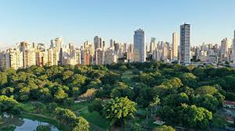

Sustentabilidade no Mundo
o Mundo Celebra o Dia Mundial da Reciclagem com Ações Sustentáveis e Conscientização Global:
17 de maio de 2025 foi marcado por uma série de ações e eventos em diversos países para celebrar o Dia Mundial da Reciclagem, data criada para estimular a reflexão sobre o consumo responsável, a gestão adequada dos resíduos e a construção de um futuro mais sustentável.
Organizações, governos e cidadãos se uniram em ações como campanhas e coleta seletiva para promover os 3Rs: Reduzir, Reutilizar e Reciclar. O Dia Mundial da Reciclagem é mais do que uma data comemorativa — é um convite à responsabilidade coletiva. Em um mundo onde a geração de resíduos cresce de forma alarmante, repensar nossos hábitos é urgente. Ações como as realizadas este ano mostram que mudanças reais começam com atitudes simples, mas constantes.
Índia: campanha para lixo eletrônico
Na cidade de Madurai, na Índia, a organização Young Indians (Yi) lançou uma campanha de coleta de lixo eletrônico que se estenderá até o Dia Mundial do Meio Ambiente (5 de junho). A iniciativa busca engajar a população no descarte correto de aparelhos eletrônicos, um dos tipos de resíduos que mais crescem no mundo.
Canadá: incentivo a mudanças de hábitos
No Canadá, a Resource Productivity and Recovery Authority (RPRA) promoveu atividades online e presenciais para educar a população sobre os impactos positivos da reciclagem. A campanha incentivou práticas mais conscientes e o consumo sustentável como pilares de uma sociedade com menor pegada ambiental.
Reconhecimento Global: heróis da reciclagem
A Global Recycling Foundation premiou 20 vencedores do concurso #RecyclingHeroes 2025, reconhecendo iniciativas de destaque na reciclagem e economia circular. Cada homenageado recebeu US$ 500 e visibilidade em plataformas digitais.